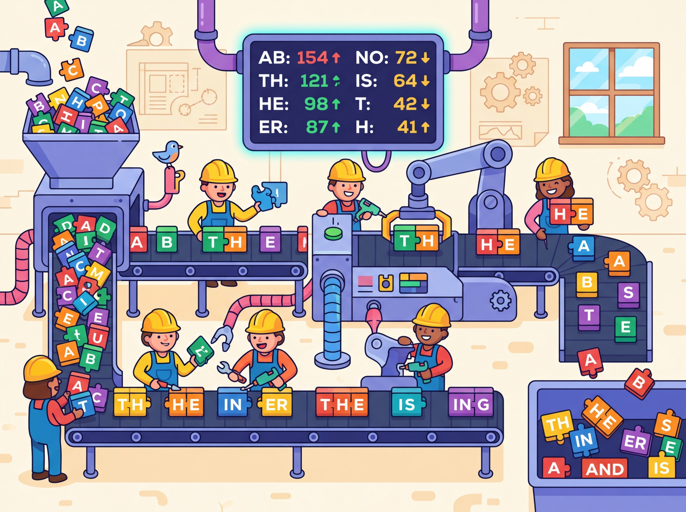

Prerequisites
You should have read Section 2.1: Why Tokenization Matters, which covers the vocabulary-coverage tradeoff and the problems with word-level and character-level tokenization that motivate subword methods. Familiarity with basic probability and information theory concepts (frequency, log-likelihood) helps when understanding the Unigram model, though it is not strictly required.
Overview of Subword Methods
All subword tokenization algorithms solve the same problem: given a training corpus, learn a vocabulary of subword units that can represent any text efficiently. They differ in how they build the vocabulary and how they segment new text at inference time. The three dominant families are:
- Byte Pair Encoding (BPE): a bottom-up, merge-based approach used by GPT-2, GPT-3, GPT-4, Llama, and most modern LLMs (Module 7).
- WordPiece: a variant of BPE that uses a likelihood-based merge criterion, used by BERT and its derivatives.
- Unigram Language Model: a top-down, pruning-based approach that assigns probabilities to all subword candidates and uses the Viterbi algorithm for segmentation, used by T5, ALBERT, and XLNet.
In addition, we will cover byte-level BPE (which eliminates the need for character-level preprocessing) and tokenizer-free models (which bypass discrete tokenization entirely).
Byte Pair Encoding (BPE)

BPE started life as a data compression algorithm in 1994, with no connection to language modeling whatsoever. Two decades later, someone tried it on text tokenization almost as an afterthought, and it became the backbone of nearly every modern LLM. Sometimes the best tools are borrowed from entirely different fields.
The Algorithm
BPE was originally a data compression algorithm introduced by Philip Gage in 1994. Sennrich et al. (2016) adapted it for NLP by applying it to sequences of characters rather than bytes. The algorithm is elegantly simple:
- Start with a vocabulary containing all individual characters found in the training corpus (plus any special tokens).
- Count the frequency of every adjacent pair of tokens in the corpus.
- Find the most frequent pair and merge it into a new token.
- Add the new token to the vocabulary.
- Replace all occurrences of the pair in the corpus with the new merged token.
- Repeat from step 2 until the desired vocabulary size is reached.
The sequence of merges is recorded in a merge table, which is all you need (along with the base vocabulary) to tokenize new text at inference time. To encode a new word, you start with its characters and apply the merges in the same order they were learned. In Module 03, you will learn how these token IDs are converted into embedding vectors and processed by attention mechanisms.
Lab: Implementing BPE from Scratch
Below is a minimal but complete BPE implementation in Python. Study the code carefully; every line maps directly to a step in the algorithm described above.
# Minimal BPE implementation from scratch from collections import Counter def get_vocab(corpus): """Split each word into characters and add end-of-word marker.""" words = corpus.split() word_freqs = Counter(words) vocab = {} for word, freq in word_freqs.items(): # Each word becomes a tuple of characters + end-of-word symbol symbols = tuple(list(word) + ["</w>"]) vocab[symbols] = freq return vocab def get_pair_counts(vocab): """Count frequency of all adjacent symbol pairs.""" pairs = Counter() for symbols, freq in vocab.items(): for i in range(len(symbols) - 1): pairs[(symbols[i], symbols[i + 1])] += freq return pairs def merge_pair(pair, vocab): """Merge all occurrences of a pair in the vocabulary.""" new_vocab = {} bigram = pair for symbols, freq in vocab.items(): new_symbols = [] i = 0 while i < len(symbols): # Look for the pair at position i if i < len(symbols) - 1 and symbols[i] == bigram[0] and symbols[i+1] == bigram[1]: new_symbols.append(bigram[0] + bigram[1]) i += 2 else: new_symbols.append(symbols[i]) i += 1 new_vocab[tuple(new_symbols)] = freq return new_vocab def train_bpe(corpus, num_merges): """Train BPE and return the merge table and final vocabulary.""" vocab = get_vocab(corpus) merges = [] for step in range(num_merges): pairs = get_pair_counts(vocab) if not pairs: break best_pair = max(pairs, key=pairs.get) merges.append(best_pair) vocab = merge_pair(best_pair, vocab) print(f"Merge {step+1}: {best_pair} -> " f"'{best_pair[0]+best_pair[1]}' (freq={pairs[best_pair]})") return merges, vocab # Train on a small corpus corpus = "low low low lower lower lowest newest widest" merges, final_vocab = train_bpe(corpus, num_merges=10) print("\nFinal vocabulary:") for symbols, freq in sorted(final_vocab.items(), key=lambda x: -x[1]): print(f" {' '.join(symbols):30s} (freq={freq})")
To tokenize a new word, you start with its characters, then apply the learned merges in priority order (the order they were learned during training). The first merge in the table that matches any adjacent pair in the current sequence is applied, and you repeat until no more merges apply. This greedy strategy is deterministic and fast.
This is not the same as applying the most frequent pair first on the new text; it is replaying the training-time merge history. The priority of each merge was fixed during training and does not change based on the input being tokenized.
Choosing a Tokenizer for a Multilingual Search Engine
Who: An NLP engineer at an e-commerce company expanding from English-only to 12 languages.
Situation: The team was building a product search system using BERT-based embeddings. Their existing English BPE tokenizer worked well, but they needed to support Japanese, Korean, Arabic, and nine other languages.
Problem: The English-trained BPE tokenizer split Japanese text into individual bytes, producing sequences 5x longer than English for equivalent queries. This blew past their 512-token context limit and tripled inference latency.
Dilemma: They could train a new BPE tokenizer on multilingual data (risking English quality regression), adopt SentencePiece with a Unigram model (better multilingual coverage but unfamiliar tooling), or use separate tokenizers per language (simpler but harder to maintain).
Decision: They chose SentencePiece with a Unigram model trained on a balanced multilingual corpus, using a vocabulary of 64K tokens. The Unigram model's probabilistic segmentation handled agglutinative languages like Korean and Turkish more gracefully than BPE.
How: They sampled training data proportionally (with upsampling for low-resource languages), trained the tokenizer using SentencePiece's built-in Unigram trainer, and validated fertility ratios across all 12 languages before deployment.
Result: Japanese and Korean fertility dropped from 4.8x to 1.6x relative to English. Average query latency returned to within 15% of the English-only baseline, and search relevance scores improved by 22% for non-Latin-script languages.
Lesson: Tokenizer choice has outsized impact on multilingual systems. A model can only be as multilingual as its tokenizer allows.
Encoding New Text with Learned Merges
# Encode a new word using the learned merge table def encode_word(word, merges): """Tokenize a single word using learned BPE merges.""" symbols = list(word) + ["</w>"] for left, right in merges: i = 0 while i < len(symbols) - 1: if symbols[i] == left and symbols[i + 1] == right: symbols = symbols[:i] + [left + right] + symbols[i+2:] else: i += 1 return symbols # Test on known and unknown words test_words = ["low", "lower", "lowest", "newer", "slowly"] for word in test_words: tokens = encode_word(word, merges) print(f" '{word}' -> {tokens}")
Notice how "lowest" gets efficiently segmented into ["low", "est</w>"], reusing subword units learned from the training corpus. The unseen word "slowly" is handled by falling back to smaller units where no merges apply.
WordPiece
WordPiece, developed at Google for the neural machine translation system and later adopted by BERT (one of the landmark models discussed in Section 4.4), is closely related to BPE. The key difference is in the merge criterion. While BPE merges the most frequent pair, WordPiece merges the pair that maximizes the likelihood of the training data. Specifically, it merges the pair (A, B) that maximizes:
This score is essentially the pointwise mutual information (PMI) of the pair, measuring how much more often A and B appear together than expected by chance. It favors merging pairs where the combination AB appears much more often than you would expect if A and B occurred independently. In practice, this tends to produce linguistically meaningful subwords, because morphological boundaries (prefixes, suffixes, roots) tend to co-occur at rates much higher than chance.
WordPiece at Inference: MaxMatch
At inference time, WordPiece uses a greedy longest-match-first (MaxMatch)
strategy. Given a word, it tries to match the longest possible token from the vocabulary
starting from the left. If no match is found, it falls back to the longest match for
the remaining substring. Continuation tokens are typically prefixed with ##
to indicate they are not word-initial.
# Simulated WordPiece MaxMatch tokenization def wordpiece_tokenize(word, vocab, max_token_len=20): """Greedy longest-match-first tokenization.""" tokens = [] start = 0 while start < len(word): end = min(start + max_token_len, len(word)) found = False while end > start: substr = word[start:end] if start > 0: substr = "##" + substr # continuation prefix if substr in vocab: tokens.append(substr) found = True break end -= 1 if not found: tokens.append("[UNK]") start += 1 continue start = end return tokens # Example vocabulary (simplified) vocab = {"un", "##help", "##ful", "##ness", "##able", "token", "##ization", "##ize", "the", "##s", "play", "##ing", "##er", "##ed", "help", "##less"} for word in ["tokenization", "unhelpfulness", "players", "helpless"]: tokens = wordpiece_tokenize(word, vocab) print(f" '{word}' -> {tokens}")
BPE builds its vocabulary bottom-up by frequency counting; WordPiece builds its vocabulary bottom-up by likelihood maximization. At inference, BPE replays its merge sequence; WordPiece uses greedy longest-match. In practice, both produce similar results, and the choice between them often comes down to the framework and codebase rather than a fundamental quality difference.
The core difference in one sentence: BPE asks "what pair appears most often?" WordPiece asks "what pair appears most surprisingly often relative to its parts?"
Concrete example: Suppose in our training corpus the pair ("t", "h") appears 10,000 times, while ("x", "z") appears only 50 times. BPE merges ("t", "h") first because 10,000 > 50. But WordPiece computes the score as: score(a, b) = freq(ab) / (freq(a) × freq(b)). If "t" and "h" are each extremely common on their own (say 500,000 and 400,000 occurrences), then 10,000 / (500,000 × 400,000) is tiny. Meanwhile, if "x" and "z" are rare (200 and 180), then 50 / (200 × 180) is much larger. WordPiece would merge ("x", "z") first because their co-occurrence is surprising given how rare each part is individually.
Unigram Language Model
Both BPE and WordPiece build their vocabularies from the bottom up, starting with individual characters and merging upward. The Unigram model takes the opposite direction entirely. Proposed by Kudo (2018) and implemented in the SentencePiece (a Google-developed tokenization library), it starts from the top down. Instead of starting small and merging upward, it starts with a large initial vocabulary of candidate subwords and iteratively prunes the least useful ones.
Training Procedure
The training procedure alternates between finding the best segmentation of the corpus and removing the least useful tokens from the vocabulary:
- Begin with a large candidate vocabulary (for example, all substrings up to a certain length that appear in the training data).
- Assign a probability to each subword based on its frequency in the corpus, forming a unigram language model: P(token) = freq(token) / total_freq.
- For each word in the training data, find the most probable segmentation using the Viterbi algorithm (dynamic programming over all possible tokenizations).
- Compute the overall log-likelihood of the corpus under the current model.
- For each subword in the vocabulary, measure how much worse the model's predictions would become if that subword were removed.
- Remove the subwords whose removal causes the smallest decrease (they are the least useful).
- Repeat from step 2 until the vocabulary reaches the target size.
Worked Example: Viterbi Segmentation Step by Step
A 10-character word has 512 possible segmentations; enumerating them all is impractical, so we use dynamic programming. The Viterbi algorithm, originally developed for decoding signals in communication systems, finds the optimal path through a sequence of possible states. To see how it works in practice, consider tokenizing the word "cats" with a small unigram vocabulary. We process the word left to right, at each position finding the best way to reach that point.
Suppose our vocabulary has these subwords and log-probabilities:
| Subword | log P |
|---|---|
| c | -2.5 |
| a | -2.3 |
| t | -2.4 |
| s | -2.6 |
| ca | -1.8 |
| cat | -1.2 |
| cats | -3.0 |
| at | -1.9 |
| ats | -2.1 |
| ts | -2.0 |
Step 1: Initialize. Create a score array for positions 0 through 4 (one past each character). Set score[0] = 0 (the start has no cost).
Step 2: Fill position 1 (after "c"). The only subword ending here is "c" (log P = -2.5). Best path to position 1: ["c"], score = -2.5.
Step 3: Fill position 2 (after "ca"). Two candidates reach here:
- "a" from position 1: score[1] + log P("a") = -2.5 + (-2.3) = -4.8
- "ca" from position 0: score[0] + log P("ca") = 0 + (-1.8) = -1.8 (winner)
Best path to position 2: ["ca"], score = -1.8.
Step 4: Fill position 3 (after "cat"). Three candidates:
- "t" from position 2: score[2] + log P("t") = -1.8 + (-2.4) = -4.2
- "at" from position 1: score[1] + log P("at") = -2.5 + (-1.9) = -4.4
- "cat" from position 0: score[0] + log P("cat") = 0 + (-1.2) = -1.2 (winner)
Best path to position 3: ["cat"], score = -1.2.
Step 5: Fill position 4 (after "cats"). Four candidates:
- "s" from position 3: score[3] + log P("s") = -1.2 + (-2.6) = -3.8 (winner)
- "ts" from position 2: score[2] + log P("ts") = -1.8 + (-2.0) = -3.8 (tie)
- "ats" from position 1: score[1] + log P("ats") = -2.5 + (-2.1) = -4.6
- "cats" from position 0: score[0] + log P("cats") = 0 + (-3.0) = -3.0 (actually best!)
Best path to position 4: ["cats"], score = -3.0. But if "cats" were not in the vocabulary,
the best segmentation would be ["cat", "s"] with score -3.8.
A 10-character word can have 512 possible segmentations. A 20-character word: over 500,000. Viterbi avoids enumerating all of them by building optimal partial solutions left to right. At each position, it only keeps the single best path. This reduces exponential time to O(n × m), where n is the word length and m is the maximum subword length.
BPE and WordPiece are bottom-up: they start with characters and build larger tokens by merging. Unigram is top-down: it starts with a large set of candidates and prunes down. Think of it this way: BPE is like building words from letter tiles by discovering common pairs. Unigram is like starting with a full dictionary and removing the least useful entries. As we discussed in Section 2.1, the vocabulary size tradeoff governs this entire design space.
A practical advantage of Unigram is that it produces multiple possible segmentations with associated probabilities, which can be used for data augmentation during training (by sampling different segmentations of the same word). This technique, known as subword regularization (Kudo, 2018), has been shown to improve model robustness.
Comparison of the Three Methods
| Property | BPE | WordPiece | Unigram |
|---|---|---|---|
| Build direction | Bottom-up (merge) | Bottom-up (merge) | Top-down (prune) |
| Merge criterion | Most frequent pair | Max likelihood gain | Min likelihood loss on removal |
| Inference method | Replay merges | Greedy MaxMatch | Viterbi (dynamic programming) |
| Segmentation | Deterministic | Deterministic | Probabilistic (can sample) |
| Notable users | GPT-2/3/4, Llama, Mistral | BERT, DistilBERT | T5, ALBERT, XLNet |
| Library | tiktoken, HF tokenizers | HF tokenizers | SentencePiece |
You need to know all three algorithms because you will encounter all three in production: GPT models use BPE, BERT uses WordPiece, and T5 uses Unigram. Understanding the differences helps you debug tokenization issues specific to each model.
Byte-Level BPE
Standard BPE operates on Unicode characters, which means the initial vocabulary must include all characters that appear in the training data. For multilingual models, this can mean thousands of distinct characters from Chinese, Japanese, Korean, Arabic, Devanagari, and other scripts before any merges even begin.
Byte-level BPE, introduced by the GPT-2 team (Radford et al., 2019), solves this by operating on raw bytes instead of Unicode characters. Since there are only 256 possible byte values, the initial vocabulary is always exactly 256, regardless of what languages or scripts appear in the data. Multi-byte Unicode characters (such as Chinese characters, which are typically 3 bytes in UTF-8) are initially represented as sequences of byte tokens, and BPE merges then learn to combine them into higher-level units.
In UTF-8 encoding, ASCII characters (English letters, digits, common punctuation) are each 1 byte. Characters from most European languages are 2 bytes. CJK characters are 3 bytes, and some emoji are 4 bytes. Byte-level BPE starts with these raw bytes and lets the merge process discover character and word boundaries automatically. GPT-2, GPT-3, GPT-4, Llama 2, and Llama 3 all use byte-level BPE.
Tokenizer-Free Models
Byte-level BPE still requires a trained merge table and a fixed vocabulary. Could we go further and skip the vocabulary entirely? What if we eliminated the tokenizer altogether and let the model operate directly on raw bytes? This idea has gained traction with models like ByT5 (Xue et al., 2022) and MegaByte (Yu et al., 2023), which process byte sequences without any subword segmentation step.
ByT5: Bytes Are All You Need
ByT5 modifies the T5 architecture to accept raw UTF-8 bytes as input. It uses a vocabulary of only 259 tokens (256 byte values plus 3 special tokens). The obvious downside is that sequences become very long: a 100-word English sentence might be 400 to 600 bytes, compared to 120 to 150 subword tokens. ByT5 compensates with a deeper encoder (relative to the decoder) and achieves competitive performance on many NLP benchmarks while being more robust to noise, spelling errors, and cross-lingual transfer.
MegaByte: Hierarchical Byte Models
MegaByte addresses the long-sequence problem by introducing a hierarchical architecture. It divides the byte sequence into fixed-size patches (for example, P = 8 bytes each) and processes these patches with a large "global" transformer. Within each patch, a smaller "local" transformer predicts individual bytes. The global transformer processes N/P patches instead of N bytes, reducing the quadratic attention cost from O(N²) to O((N/P)² + P²). This two-level approach makes byte-level modeling practical for longer documents.
More recently, Meta's Byte Latent Transformer (BLT, 2024) dynamically allocates compute to complex byte sequences, achieving competitive performance with subword models while maintaining the benefits of byte-level input. This line of research suggests that the gap between tokenizer-free and subword-based models is narrowing.
Tradeoffs of Tokenizer-Free Models
| Advantage | Disadvantage |
|---|---|
| No tokenizer training required | Much longer sequences (3x to 5x) |
| Robust to typos and noise | Higher computational cost per text |
| Inherently multilingual and script-agnostic | Harder to learn long-range dependencies |
| No out-of-vocabulary tokens | Less interpretable intermediate representations |
| Uniform treatment of all inputs | Not yet competitive at the largest scales |
As of 2025, all widely deployed production LLMs (GPT-4, Claude, Llama, Gemini, Mistral) use subword tokenization. Tokenizer-free models are an active research direction with promising results on specific benchmarks, but they have not yet been proven at the scale and breadth of tasks required for general-purpose deployment. Keep an eye on this space, but do not assume that tokenizers are going away anytime soon.
Debugging a Vocabulary Size Decision for Code Generation
Who: A machine learning team at a developer tools startup training a code-generation model.
Situation: The team was training a BPE tokenizer for a code-focused LLM. They initially used a vocabulary of 32K tokens (following the GPT-2 convention) trained on a mix of Python, JavaScript, Java, and Rust source code.
Problem: During evaluation, the model frequently produced syntactically broken code. Indentation errors were especially common in Python, and multi-character operators like !== and <<= in other languages were being split in inconsistent ways.
Dilemma: They could increase vocabulary size to 64K or 100K (capturing more code patterns as single tokens, but increasing embedding table size), add pre-tokenization rules to protect whitespace and operators, or switch to byte-level BPE to handle all characters uniformly.
Decision: They adopted byte-level BPE (following the GPT-4 approach) with a 100K vocabulary and added pre-tokenization rules that treated indentation blocks and common multi-character operators as atomic units before BPE merges.
How: Using the Hugging Face tokenizers library, they trained a byte-level BPE tokenizer with custom pre-tokenization regex patterns that preserved indentation whitespace and operator sequences. They validated by measuring "round-trip accuracy" on 10,000 code files.
Result: Syntax error rates in generated code dropped by 34%. Python indentation errors fell by 61%. The larger vocabulary increased model size by only 2% (the embedding table is small relative to the full model), while reducing average sequence length by 18%, saving inference compute.
Lesson: Vocabulary size and pre-tokenization rules are not afterthoughts. For domain-specific models, investing in tokenizer design pays dividends that no amount of fine-tuning can replicate.
Check Your Understanding
Reveal Answer
Reveal Answer
Reveal Answer
Reveal Answer
Reveal Answer
Reveal Answer
Now that you understand how these algorithms work internally, Section 2.3 shows how they behave in practice: special tokens, chat templates, multilingual fertility, and cost estimation.
Key Takeaways
- BPE builds a vocabulary bottom-up by iteratively merging the most frequent adjacent pair of tokens. It is the most widely used tokenizer in modern LLMs.
- WordPiece is similar to BPE but merges pairs that maximize training data likelihood rather than raw frequency. It is the tokenizer behind BERT.
- Unigram works top-down by pruning a large initial vocabulary. It uses the Viterbi algorithm for segmentation and can produce multiple probabilistic segmentations, enabling subword regularization.
- Byte-level BPE operates on raw UTF-8 bytes (base vocabulary of 256), eliminating the need for character-level preprocessing and providing natural multilingual support.
- Tokenizer-free models (ByT5, MegaByte) bypass subword tokenization entirely, gaining robustness and universality at the cost of longer sequences and higher compute.
- All three mainstream methods (BPE, WordPiece, Unigram) produce similar practical results; the choice is often driven by ecosystem and codebase rather than fundamental quality differences.